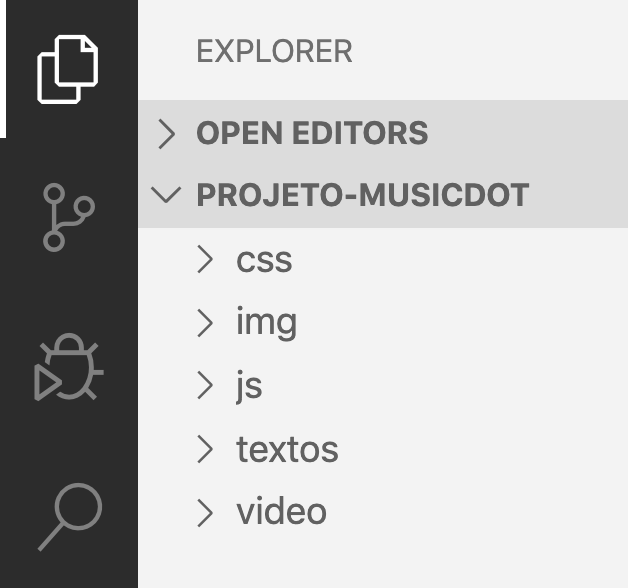
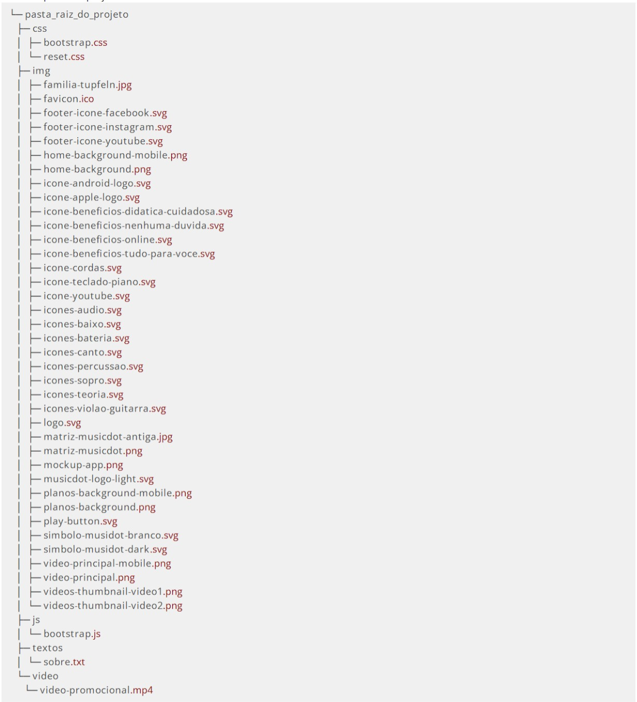

Nesse curso criaremos um site com várias páginas e criaremos vários arquivos pra isso. Para sua organização, recomendamos que crie uma pasta para colocar todos esses arquivos.
Antes de escrever qualquer código do projeto, você também já pode pegar todos os arquivos de imagens e estilo do curso que estão prontos e copiar eles para a pasta "projeto-musicdot" que acabou de criar.
Faça o download dos arquivos no seguinte endereço: https://www.caelum.com.br/download/caelum-arquivos-wd43.zip
Abrindo o projeto no Visual Studio Code:
Clique no menu ARQUIVO > ABRIR PASTA e escolha a pasta "projeto-musicdot" que você criou na "Área de Trabalho". Agora o Visual Studio Code vai ter acesso a todos os arquivos do curso, e sempre que você criar novos arquivos pelo editor eles já vão ser criados dentro da pasta.
Confira na barra lateral da esquerda se todos os arquivos aparecem como na imagem abaixo:

Há 43 arquivos a serem adicionados nas pastas css, img, js, textos e video. Note que esses arquivos foram disponibilizados já prontos para você.
Os 43 arquivos devem ser adicionados na seguinte estrutura de pastas:
novos arquivos do projeto
